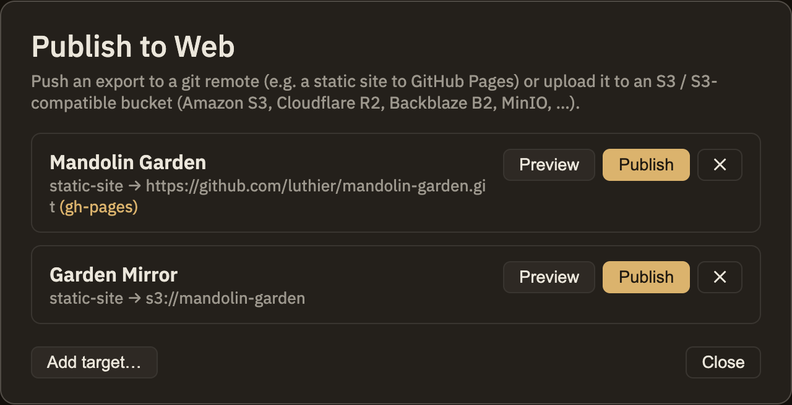

Publishing
Turn your notes into a website other people can browse — and, when you're ready, put that website online.
Make a website
Minerva can turn your whole collection of notes into a self-contained website, complete with a sidebar, a search box, and a page for each note. Anyone you share it with can read and search it in a browser.
If you want a particular note to look a certain way when it's shared, you can set a few extra properties at the top of that note:

Put it online
Making a website leaves the files on your computer. When you want it live for others to visit, Publish to Web sends it to the web for you. Set up a destination once, then republish with a single action whenever you've made changes and want the live version to catch up.
You can also do a trial run first: Minerva shows you exactly what would change before anything actually goes live, so you can double-check you're publishing what you intended.
Everything else in this section stays on your own machine until you decide otherwise. Publishing to the web is the exception — when you run it for real, your site goes live. It's worth a quick glance to confirm you've picked the right destination before you do.